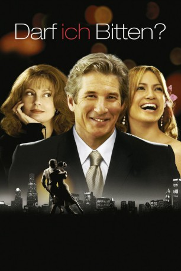

#2422 Darf ich bitten?
Alternativ: Shall We Dance
 
 IMDB-Wertung: 6.1 / 10
IMDB-Wertung: 6.1 / 10  Metascore: 47
Metascore: 47 
Im eigentlich zufriedenen Leben von Anwalt John Clark fehlt irgend etwas. Als er eines Abends einer attraktiven jungen Frau spontan in ein Tanzstudio folgt, erwacht eine ungeahnte Leidenschaft in ihm: Er meldet sich für einen Tanzkurs an und bereitet sich schon kurz darauf auf den größten Tanzwettbewerb Chicagos vor - sehr zur Verwunderung seiner Frau, die sich nicht erklären kann, wo ihr Gatte seine Freizeit verbringt.
Jahr: 2004
Dauer: 106 Minuten
FSK: 0
Land: USA Studio: MiramaxTonspuren: DTS - ,
Untertitel: Deutsch, Englisch,
Auflösung: 1080p (1920x1080) Größe: 9953 MB
Genre: Komödie, Drama, Liebe
Regisseur:  Peter Chelsom
Peter Chelsom
Drehbuch: Masayuki Suo, Audrey Wells
Soundtrack: John Altman, Gabriel Yared
Darsteller:
 Richard Gere als John Clark
Richard Gere als John Clark Jennifer Lopez als Paulina
Jennifer Lopez als Paulina Susan Sarandon als Beverly Clark
Susan Sarandon als Beverly Clark Lisa Ann Walter als Bobbie
Lisa Ann Walter als Bobbie Stanley Tucci als Link
Stanley Tucci als Link- Anita Gillette als Miss Mitzi
 Bobby Cannavale als Chic
Bobby Cannavale als Chic- Omar Benson Miller als Vern
- Tamara Hope als Jenna Clark
- Stark Sands als Evan Clark
 Richard Jenkins als Devine
Richard Jenkins als Devine Nick Cannon als Scott
Nick Cannon als Scott- Sarah Lafleur als Carolyn
- Driton 'Tony' Dovolani als Slick Willy
 David Sparrow als Louis
David Sparrow als Louis Matt Gordon als Frank
Matt Gordon als Frank- Sandra Caldwell als Elise
- Karina Smirnoff als Link's Pouty Dance Partner
- Mya als Vern's Fiancée
- James Sermons als Chic's Young Man
- Geri Hall als Bemused Co-Worker
- Sean O'Brian als Parking Attendant
 Ja Rule als Hip Hop Bar Performer
Ja Rule als Hip Hop Bar Performer- Kim Kindrick als Office Girl
- Tre Armstrong als Dancer
- Lisa Durupt als Dancer
- Sharon Ferguson als Dancer
- Sarah Murphy-Dyson als Competitor #89
- Justin Pike als Dancer
- Allison Riley als Dancer
- CindyMarie Small als Dancer
- Allen Walls als Dancer
- Rachel Franco als Dancer , uncredited
- Stan Lesk als Flower Man , uncredited
- Karen Musey als Dancer , uncredited
- Liam Stone als Young John Clark / unused flashback scene , uncredited
- Onalee Ames als Diane
- Diana Salvatore als Tina
- Daphne Korol als Daphne
- Katya Virshilas als Perky Girl
- Candace Smith als Betsy
- Mairi Babb als Patty
- Ann Margaret Clements als Female Commuter
- Diana Marquis als Tanya
- Beatriz Pizano als Paulina's Mother
- Deborah Yates als Winking Dancer
- Holly Johnson als Chic's Cute Dance Partner
- Gio Tropea als D.J.
- Barre W. Hall als Silver Fox
- Nick Kosovich als Winking Dancer's Partner
Datei: X:\2004(A-F)\Darf ich bitten (2004, FSK0, 1920x1080).mkv seit 09.11.2015
Festplatte: HD 2003-2004-2005(A-F)
 Es gibt insgesamt 39 Filme in der Gruppe '2004(A-F)'
Es gibt insgesamt 39 Filme in der Gruppe '2004(A-F)'